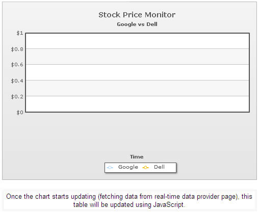
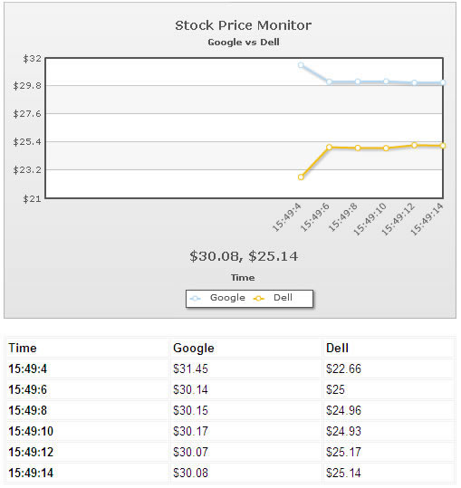

| Getting data using JavaScript | ||||||||||||||||||||||||
The data streaming charts also allow you to get the current view state of data (i.e., the data which is currently being shown on the chart) using JavaScript. Additionally, the charts allow you to track events in JavaScript whenever new data is provided to the chart (either from the real-time data provider page or using JavaScript). |
||||||||||||||||||||||||
| FC_ChartUpdated() method - event when chart is updated | ||||||||||||||||||||||||
If you wish, you can track the event of chart data update - i.e., each time the chart fetches new data and updates itself, it can notify you by calling a JavaScript method. The method is named as FC_ChartUpdated(DOMId). You can define the FC_ChartUpdated method in your HTML code as under: |
||||||||||||||||||||||||
function FC_ChartUpdated(DOMId){
//Check if DOMId is that of the chart we want
if (DOMId=="ChId1"){
//Get reference to the chart
var chartRef = FusionCharts(DOMId);
//Now you can do anything with the chart...
}
}
|
||||||||||||||||||||||||
As you can see above, whenever a real-time chart (present in this page) receives new data (from the data provider page or even JavaScript feedData() method), it will now call the FC_ChartUpdated() method and pass its DOM Id to this method. If you've multiple data-streaming charts on the same page, you can use DOMId to track which chart was updated and based on that, take future actions. |
||||||||||||||||||||||||
|
FusionWidgets XT (v3.2) introduces two new events to track real-time updates on charts and gauges. The names of the two events are: RealtimeUpdateComplete and RealtimeUpdateError. RealtimeUpdateComplete event is raised when a real-time gauge or chart completes updating data. Example implementation:
FusionCharts("myChartId").addEventListener ("RealtimeUpdateComplete" ,
function(event, parameter)
{
alert( event.sender.id + " has updated data." );
}
);
Existing JavaScript implementations using the FC_ChartUpdated event will continue to function without any problem. RealtimeUpdateError event is raised when an error occurs while updating data in a real-time gauge or chart. This event passes the HTTP Status (as number) of the error occurred. Example implementation: FusionCharts("myChartId").addEventListener ("RealtimeUpdateError" ,
function(event, parameter)
{
alert( "Problem occurred while updating real-time data. The error status code is" + parameter.httpStatus );
}
);
|
||||||||||||||||||||||||
| getData() method | ||||||||||||||||||||||||
|
For any data-streaming chart present in the HTML page, you can use the getData() method to get the chart's current data in a JavaScript array. Shown below is an example: |
||||||||||||||||||||||||
function FC_ChartUpdated(DOMId){
//Check if DOMId is that of the chart we want
if (DOMId=="ChId1"){
//Get reference to the chart
var chartRef = FusionCharts(DOMId);
//Get the current view state data of chart (in array)
var arrData = chartRef.getData();
//Update our display container
updateDisplay(arrData);
}
}
|
||||||||||||||||||||||||
In the above code, we've combined FC_ChartUpdated() and getData() method. Whenever a chart (with ID as ChId1) updates in the page, this function is invoked. In this function, we get the new data of chart in a JavaScript array using the getData() method and then pass it to another custom function called updateDisplay(). The structure of the array returned by getData() function is as under: |
||||||||||||||||||||||||
|
||||||||||||||||||||||||
| To explain the concept further, let's build a simple example. | ||||||||||||||||||||||||
| An example | ||||||||||||||||||||||||
We'll build further on our previous Multiple dataset example, where we were comparing the stock prices of Dell and Google. This time, we'll extend it to show the data retrieved by chart in a table that'll be controlled by JavaScript. That is:
The following code (contained in Download Package > Code > RealTime > GetData_JS.html) does the trick: |
||||||||||||||||||||||||
<html>
<head>
<script type="text/javascript" src="../Charts/FusionCharts.js"></script>
<script language="javascript">
//FC_ChartUpdated method is called when any real-time chart present in the
//page has received new data (either from data-provider page or from JavaScript)
function FC_ChartUpdated(DOMId){
//Check if DOMId is that of the chart we want
if (DOMId=="ChId1"){
//Get reference to the chart
var chartRef = FusionCharts(DOMId);
//Get the current view state data of chart (in array)
var arrData = chartRef.getData();
//Update our display container
updateDisplay(arrData);
}
}
//This method is called when the chart has updated.
function updateDisplay(arrData){
//Here, we access the array of data, build HTML code to represent
//the same data and finally update the page display container.
var i,j;
var tableCode = "<table width='500' align='center' border='1' bordercolor='#f1f1f1' cellpadding='2' cellspacing='1'>";
//Iterate through each row in the array;
//Note: arrData[0][0] is empty
//arrData[0][i] contains dataset series names
//arrData[i][0] contains category labels (x-axis labels)
//Rest of the cells contain data in numeric format (or null).
for (i=0; i<arrData.length; i++){
//Create a table row for each row
tableCode = tableCode + "<tr>";
for (j=0; j<arrData[i].length; j++){
//If it's the first row, we add dataset series name
if (i==0){
//if it's the first cell [0][0], we add "Time" as header
if (j==0){
tableCode = tableCode + "<td class='textBold'>Time</td>";
}else{
tableCode = tableCode + "<td class='textBold'>" + arrData[i][j] + "</td>";
}
}else{
//If it's first cell, we add it as category label, else as normal
if (j==0){
tableCode = tableCode + "<td class='textBold'>" + arrData[i][j] + "</td>";
}else{
//We add data only if it's not null
if (arrData[i][j]!=null){
tableCode = tableCode + "<td class='text'>$" + arrData[i][j] + "</td>";
}else{
tableCode = tableCode + "<td class='text'> </td>";
}
}
}
}
//Close row
tableCode = tableCode + "</tr>";
}
//Close table element
tableCode = tableCode + "</table>";
//Update the DIV container with this.
var divC = document.getElementById("tableDiv");
divC.innerHTML = tableCode;
}
</script>
</head>
<body>
<center>
<div id="chart1div">
This text is replaced by the Flash movie.
</div>
<script type="text/javascript">
var chart1 = new FusionCharts("../Charts/RealTimeLine.swf", "ChId1", "500", "350", "0", "1");
chart1.setXMLUrl("MultipleDS.xml");
chart1.render("chart1div");
</script>
<br>
<div id="tableDiv">
<table width="500" align="center" border="1" bordercolor="#f1f1f1" cellpadding="2" cellspacing="1">
<tr>
<td align='center'>
<span class='text'>Once the chart starts updating (fetching data from real-time data provider page), this table will be updated using JavaScript.
</td>
</tr>
</table>
</div>
</br>
</center>
</body>
</html>
|
||||||||||||||||||||||||
|
When you run this page, you'll first get a blank chart as under:  And after a few updates, you'll be able to see the table being updated by JavaScript, as shown under:  Using the methods explained above, you can build a wide variety of interactive AJAX driven applications. You can use the chart as an interface to retrieve the data and then handle it in your JavaScript code too. |